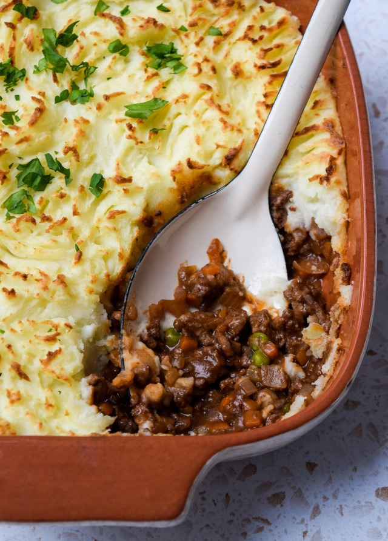

Cottage Pie

Ingredients
- 4 large Yukon Gold potatoes
- 6 tablespoon butter, divided
- 1 clove garlic, minced
- salt and pepper to taste
- 1 tablespoon oliv oil
- 1 pound lean ground beef
- 1 tablespoon Herbe de Provence
- 1 teaspoon ground nutmeg
- 1 1/2 cups frozen peas
Steps
- Preheat oven to 350 degrees F
- Place Potatoes into a pot and bring to a boil over high heat
- Meanwhile heat the oliv oil in a skillet over medium heat and cook meat
- Bake, uncovered in the preheat oven until through and bubbly, about 20 minutes
Home